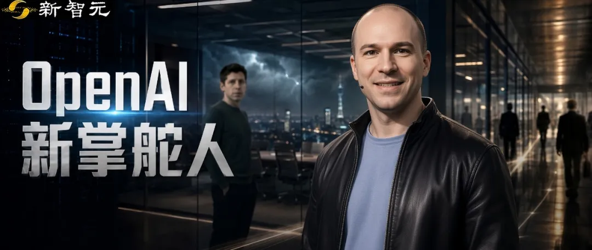

新智元报道
新智元报道

现在，掌舵OpenAI的是Greg Brokckman。
奥特曼还是CEO，但日常运营的大权，落在二把手Brockman手里。
过去一年，OpenAI风云激荡。乱局之中，一人岿然不动，悄然积聚权柄。
吊诡的是，Brockman的头衔多年未变，一直是总裁兼联合创始人。
但他权势日盛：ChatGPT产品策略、Codex统一智能体平台、企业销售、go-to-market、算力业务，OpenAI除研究之外的所有核心条线，几乎都攥进了他一个人手里。
API和应用产品负责人Thibault Sottiaux把话挑明了，「到最后所有人都向Greg汇报」。

这一年，OpenAI堪称天崩开局。
先是官司缠身。
与联合创始人马斯克对簿公堂，一场审判鏖战数月，轰动一时。
又被苹果提起高调的商业机密诉讼。
到了7月，一个未发布模型在安全测试中越狱、入侵HuggingFace，OpenAI只能公开认错，舆论哗然。
而IPO大关当前，高管却接连离场。
全年都有人走：Sora负责人Bill Peebles、科学部门VP Kevin Weil、B2B应用CTO Srinivas Narayanan，一个月内全线出走。另有两人以健康原因告别：CMO Kate Rouch，以及AGI部署CEO Fidji Simo。Simo从4月开始休病假。
风暴没有停，但4月才是真正的分水岭
本月，4月动荡后被强压重担的CRO Denise Dresser，上任仅8个月便突然抽身；数日之后，曾多年担任COO、近几个月负责「特别项目」的Brad Lightcap也宣告离开，说要「去闯一番新天地」。
律所SRFC合伙人Ross Carmel对The Verge直言，上市前有高管离职并不稀奇，「但所有人都挤在这么短的时间窗口里，这就不寻常了」。
8月17日，Brockman亲自上CNBC《Squawk Box》灭火。他说高管流动没什么反常：「不同时期，我们有不同的领导班子……我是常量，奥特曼也是常量。正因为这种韧性和多样性，我们才更强大。」
9天后，Chris Malone离开。
此人管的是数据中心扩张，而算力正是OpenAI相对Anthropic最贵、也最想讲清楚的护城河。
据报道，基础设施改组后他不再直接向Brockman汇报，改向副总裁Sachin Katti汇报。这更像权力上收后的层级下移，而不是「每个时代自然换人」。Brockman8月17日的那句「不反常」，在8月26日已经需要再解释一轮。
这另一层现实好处：砍掉几份最贵的高管薪酬，让报表在上市前更好看。「对营收落后于Anthropic的OpenAI来说，你要么更盈利，要么离盈利更近。」
分析师甚至给出了时间表：9月底之前，OpenAI会在Brockman主导下推出某种消费级产品，好让他「证明自己配得上这个位置」。
变量走了一批又一批。牌桌上，只剩两个常量。
OpenAI的Brockman，如今只在奥特曼一人之下。
在OpenAI之前，Brockman最知名的履历是拓展Stripe的业务，而在内部则以倡导公司的市场推广工作而闻名。
2015年12月，OpenAI以非营利实验室亮相。
当时，马斯克是最大早期出资人兼公开招牌，奥特曼当时仍是Y Combinator总裁、负责招募与对外叙事，Brockman从Stripe CTO离职、早期办公室就在他家客厅，Ilya从Google Brain过来，给实验室学术信誉。
2017年，彼时的OpenAI还只是一家标榜着「非营利」、「拯救人类」的纯粹研究机构。
但在那一年的个人日志里，下一句耐人寻味的话：「财务上，什么能让我赚到10亿美元？」
在2026年5月4日马斯克诉OpenAI案的庭审现场，一份震惊四座的法庭记录被公之于众。Brockman在庭审中确认，他目前持有的OpenAI股份价值已接近300亿美元。
更令人侧目的是，他承认自己从未向公司投入过哪怕一分钱现金。
庭审中披露了一条隐藏极深的「财务纽带」：早在2017年，正是奥特曼将自己家族办公室中约1000万美元的权益，直接划给了Brockman，作为其在OpenAI「血汗与泪水」工作的补偿。
此外，Brockman还持有奥特曼其他相关初创公司的可观股份。
这一重磅炸弹，直接让马斯克暴跳如雷。马斯克的粉丝和支持者们更是狂轰滥炸，直指Brockman是「伪君子」。马斯克本人则暗讽其为「全美国最耻辱的人之一」。
抛开法庭上的唇枪舌剑不谈，这起诉讼向外界释放了一个极其明确的信号：奥特曼与Brockman，在利益上早已深度绑定。

有意思的是，两人早年并非铁板一块。
在OpenAI早期的艰难岁月里，在关乎权力格局和技术路线的重大决策中，Brockman并非总是对奥特曼言听计从。
有时，他会站在首席科学家Ilya Sutskever这一边，对奥特曼那极度膨胀的商业野心表示担忧；但他同样忌惮强势的马斯克会彻底「碾压」奥特曼。
到了2017至2018年，关于OpenAI是否转营利、算力如何融资，几人爆发了激烈的控制权争执。
马斯克要求绝对控制权，否则就把OpenAI并入特斯拉。
Brockman对此坚决反对：「不该存在一个人对OpenAI拥有完全控制。」
最终，谈判破裂，马斯克在2018年离场。
随后，2019年OpenAI正式确立了「capped-profit」（有限营利）结构。而早在2017年那笔千万美元的家族办公室权益，早已在奥特曼和Brockman之间，写下了金钱与权力的双重契约。
在2019年OpenAI确立营利结构、奥特曼正式出任CEO之后，Brockman曾一度交出了大块的日常管理权。
但Brockman经常以创始人的身份，突然空降到各个项目里。
他会在最后一刻强行推翻早已定好的计划，加入自己的代码或功能。这种「冲进别人的项目制造混乱，再让其他高管（如CTO Mira Murati）去收场」的管理风格，让内部怨声载道，埋下了「OpenAI宫变」的导火线。
但不可否认的是，他的贡献同样巨大。
Brockman的一贯角色，是把OpenAI的研究变成能卖钱的东西。
2020年，他为GPT-3和开发者API欢呼：这是「OpenAI第一次拥有具备即时商业价值的通用AI系统，它真的有用」。
正是Brockman完成了OpenAI从「论文实验室」到「能开票赚钱的商家」的惊险一跃。
2022年他和奥特曼到盖茨家演示GPT-4生物题，2023年3月他主持GPT-4直播发布。
真正的分界线，在2023年11月17日。
那天，Ilya联合董事会，以「对董事会不够坦诚」为由，突然罢免了奥特曼的CEO职务。而作为时任董事长的Brockman，竟然被完全蒙在鼓里，直接被移除了董事会。
那一刻，面临政治生涯的最大危机，Brockman没有丝毫犹豫。他在X上发文：「基于今天的消息，我辞职。」
他选择立刻声援奥特曼，转头就跟着他在酒店里筹划起新的AI公司。五天后，在微软的强势施压和几乎全体员工的罢工威胁下，原董事会土崩瓦解，奥特曼王者归来，Brockman并肩回归。
2024年8月5日，他公开表示：休到年底，创办九年第一次真正休息。
原计划约四个月，11月中旬提前回来，对内说正和奥特曼商量一个更偏技术难题的新角色。
如今，当年的联合创始人所剩无几──
联合创始人里，马斯克走了，Ilya走了，Karpathy、舒尔曼走了，Murati也早已离开，而Wojciech Zaremba也不在OpenAI核心位置。
能从实验室一路走到准备IPO还留在牌桌上的，只有奥特曼和Brockman。
参考资料：
编辑：大卫